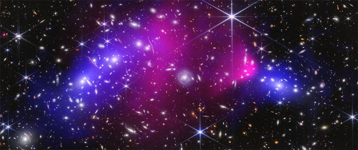

Before you sip on bubbly to ring in 2026, gaze at this glittery bundle of galaxies that’s nicknamed the “Champagne Cluster,” also known as RM J130558.9+263048.4.
This moniker owes to the fact that astronomers discovered it on New Year’s Eve in 2020. It also references the bubbly shape of the superheated gas and galaxies illuminated in purple. The color was added to the image by researchers to highlight these features.
Galaxy clusters consist of up to thousands of galaxies, which are glued together by their own gravity. They also contain lots of multimillion-degree gas and invisible dark matter—the elusive substance that makes up the majority of our universe. These cosmic conglomerations host the largest galaxies ever discovered and help scientists grasp how such giants emerge.
Read more: “Have We Gotten Dark Matter All Wrong?”
This newly released composite image, captured by NASA’s Chandra X-ray Observatory and optical telescopes, reveals that the Champagne Cluster may actually consist of two galaxy clusters merging into one. While the sizzling gas in galaxy clusters usually looks more circular or oval-shaped, here it stretches lengthwise—around the top and center of the bubbly mass, we can see two globs of individual galaxies.

The Bullet Cluster provided some of the most intriguing evidence of dark matter yet. Credit: NASA, ESA, CSA, STScI, CXC; Science: James Jee (Yonsei University/UC Davis), Sangjun Cha (Yonsei University), Kyle Finner (IPAC at Caltech)
The phenomenon is rare among galaxy clusters. It has also been observed with the Bullet Cluster, which was recently mapped in finer detail thanks to NASA’s James Webb Space Telescope. It may have formed from multiple crashes between galaxy clusters billions of years ago.
As for the Champagne Cluster, astronomers have suggested two potential origin stories, which they outlined in a paper published in The Astrophysical Journal. The first theory: It’s possible that the two clusters already ran into each other more than two billion years ago; afterward, they were brought back together by gravity and are set to rumble again. The second theory: One collision occurred around 400 million years ago, and the two clusters are now journeying away from each other.
In future research on the Champagne Cluster, scientists hope to learn how dark matter responds to these speedy crashes. Such chaotic events offer intriguing hints into this mysterious substance—for example, the Bullet Cluster has offered some of the most solid evidence for dark matter’s existence ever found. 
Enjoying Nautilus? Subscribe to our free newsletter.
Lead image: NASA/CXC/SAO/P. Edmonds and L. Frattare